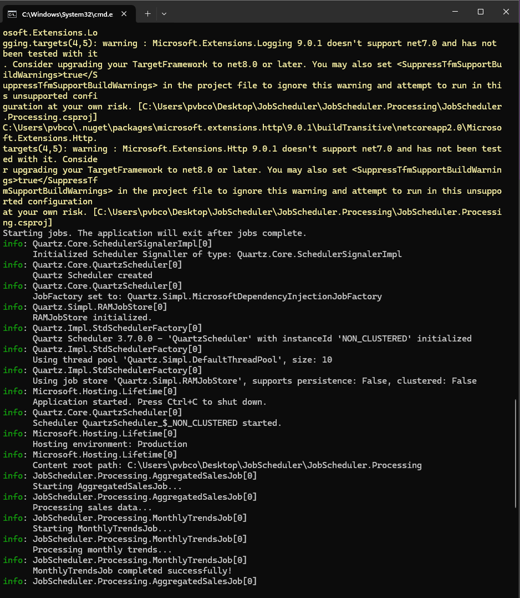

Quartz.NET Automation Pipeline

End-to-end data processing pipeline for 10M+ records using C#/.NET + Quartz.NET.
WPF UI triggers scheduled, multi-threaded jobs; Flask API generates bar/pie/line charts
that are displayed in-app. Real-time logs, automated workflows, and enterprise-grade
reliability for large-scale analytics.
Database Migration Automation — SQL Server → PostgreSQL
High-throughput C#/.NET pipeline to migrate 1M+ records from SQL Server to PostgreSQL with
multi-threading, Dockerized services, and zero-downtime design. Hangfire dashboard provides
real-time job monitoring and logs; automated AWS EC2 backups enable rollback and resilience.
GraphViz — Interactive Graph Visualization
D3.js web app to create, edit, and visualize directed/undirected graphs and simulate graph algorithms in real time.
Add nodes/edges, drag to reposition, and switch graph modes with a clean, responsive UI.
Built with HTML/CSS/JS and D3 for education and complex network demos.
COVID-19 Vaccine Availability Checker
Python-based desktop tool leveraging the Indian Government’s public API for vaccination slots.
Users enter pincode and date to check real-time availability of COVID-19 vaccines, easing the
challenge of slot scarcity during mass vaccination campaigns. Built with requests module and JSON parsing.
University Management System
A full-featured desktop application for universities and colleges, developed in Java with
MySQL backend. Manages fees, exams, attendance, and student records through a Swing/AWT GUI.
Simplifies administration, improves data handling, and supports efficient educational
management at scale.
Chatting Application in Java — (WhatsApp Clone)
Desktop-based chat application built with Java Swing and socket programming (TCP/UDP).
Implements client-server architecture where multiple clients connect to a central server
for real-time messaging. Demonstrates Java network programming concepts and provides a
simple, effective WhatsApp-style clone for seamless communication.
Object Oriented Design of Vehicle Parking System
Parking lot management system designed in two versions: Basic (single entrance/exit, admin-controlled)
and Advanced (multi-floor, supports both two-wheelers and four-wheelers). Built as a
command-line tool, the project emphasizes core OOP concepts including inheritance, polymorphism,
and abstraction. Demonstrates low-level design (LLD) and application of real-world OOD patterns.
Audio Filter Designs — MATLAB
Designed and implemented custom audio filters in MATLAB for noise reduction and sound
enhancement. Showcases advanced signal processing techniques, from eliminating
background noise to boosting clarity, tailored to diverse application needs in
audio engineering projects.